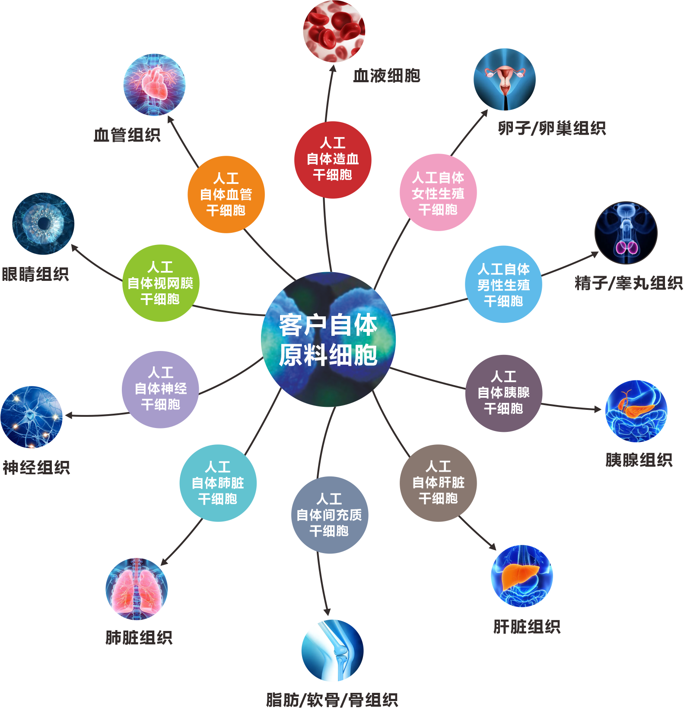
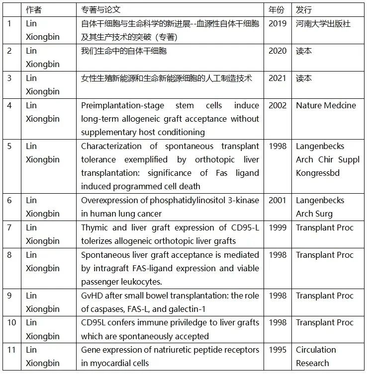
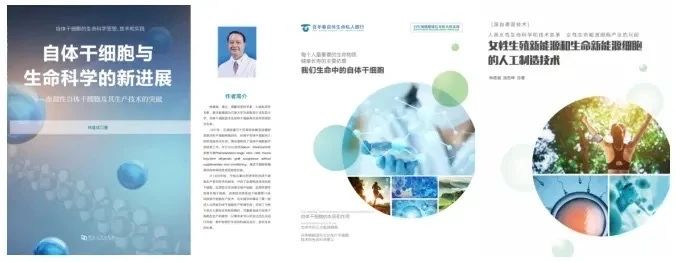
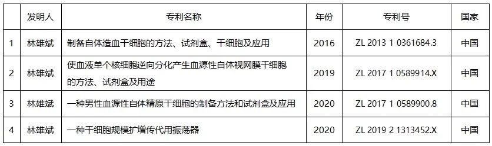
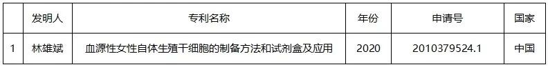
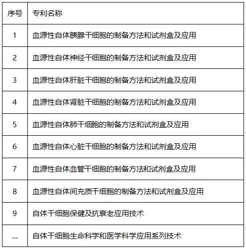

年后肝"负重"？百年春护肝美颜能量抗衰老针——给肝"松绑"，让脸发光！
2026-03-01

About Us
关于百年春
林雄斌 医学博士
自体干细胞技术、自体干细胞生命科学和医学科学资深专家、探索家和理论家。化学诱导性人工自体干细胞生产专利/专有系列技术发明人，自体干细胞生命科学和医学科学应用理论首创者。
主要经历
1990-1994年 德国马尔堡大学 博士
1994-1995年 德国柏林MDC分子医学中心 研究员
1995-1997年 美国宾夕法尼亚大学 博士后
1998-2002年 德国基尔大学 研究员
2002-2004年 南宁再生细胞移植治疗中心 主任
2004-2008年 桂林生之源干细胞移植专科医院 院长
2008-2014年 北京善尔生物技术有限公司 董事长、首席科学家
2012-2016年 香港干细胞抗衰老医学技术控股有限公司 董事、首席科学家香港干细胞抗衰老医学研究所有限公司 董事、首席科学家香港159再生医学集团 执行董事、首席科学家
2016-至今 深圳百年干细胞生物科技有限公司 董事长、首席科学家
2022-至今 深圳百年春生命科技有限公司 董事长、首席科学家
1.遗传性自体干细胞、人工自体干细胞及异体干细胞概念、定义和分类的原创科学理论；
2.自体干细胞生命科学和医学科学应用理论；
3.人工自体干细胞生产及其应用技术的行业标准设计。
1.自体干细胞保健及抗衰老应用技术
2.自体干细胞生命功能养生应用技术
3.自体干细胞疾病治疗修复应用技术
4.自体干细胞生殖能源细胞和生殖科学应用技术
5.自体干细胞免疫能源细胞和免疫调节细胞修复应用技术
6.自体干细胞生命能源细胞和长寿应用技术
7.自体干细胞3D打印器官应用技术
8.自体干细胞生产中心、储存中心和供货中心的自体干细胞库
主要成就
1994年，林雄斌博士的博士毕业论文获评德国优秀医学博士论文"summa cum laude"【最优等级】。
1998年，林雄斌博士研发的自体干细胞技术获得成功，成为将白细胞逆向分化生成自体造血干细胞的德国第一人。
1998年，林雄斌博士入选德国外籍优秀科学家前10名。
1998年，林雄斌博士成为第一位因自体干细胞技术科研成果，而被德国内务部推荐加入德国国籍的中国科学家。
2001 年，林雄斌博士被中国国务院侨办评为优秀华侨代表，并邀请回国创业。2002年应中国国务院侨办邀请，回国参加“十一国庆观礼”大典并接受党和国家领导人的接见。
2002年，林雄斌博士成为第一个在《Nature》杂志（世界三大顶级期刊之一）发表干细胞研究论文的华人科学家。
2002年，林雄斌博士在广西南宁成立了广西第一家细胞移植治疗中心----南宁再生细胞移植治疗中心，也是中国最早的干细胞治疗中心之一。
2004年，林雄斌博士在中国创建了国内第一家干细胞移植专科医院----桂林生之源干细胞移植专科医院。
2012年，林雄斌博士在自体造血干细胞技术项目入股香港生命科学技术集团，使之成为香港第一家干细胞上市公司。
2019年，林雄斌博士总结20余年的自体干细胞技术研发经验和转化应用成果，撰写并发表了国内首部自体干细胞专著《自体干细胞与生命科学的新进展--血源性自体干细胞及其生产技术的突破》。
2020年，林雄斌博士撰写了《我们生命中的自体干细胞》读本，用通俗的语言讲解生命的能源细胞----自体干细胞的应用。
2021年，林雄斌博士撰写了《女性生殖新能源和生命新能源细胞的人工制造技术》一书，展示了一种由体细胞向女性自体生殖干细胞和生殖细胞逆向分化的生产技术工艺和应用技术，讲述了一个寻找先天性和遗传性以外女性生殖干细胞的人工额外来源的生命能源研究领域。
林雄斌博士独创的化学诱导性人工自体干细胞生产专利/专有系列技术，该技术能够生产自体造血干细胞、女性自体生殖干细胞、男性自体生殖干细胞、自体神经干细胞、自体视网膜干细胞、自体胰腺干细胞、自体肝脏干细胞、自体肺干细胞、自体血管干细胞和自体间充质干细胞等10余种自体干细胞，是一种非基因重编的“原装自体干细胞”，是具有高效和安全的应用型自体干细胞技术和产品。

化学诱导性自体造血干细胞生产制备技术
化学诱导性男性自体生殖干细胞生产制备技术
化学诱导性女性自体生殖干细胞生产制备技术
化学诱导性自体神经干细胞生产制备技术
化学诱导性自体视网膜干细胞生产制备技术
化学诱导性自体胰腺干细胞生产制备技术
化学诱导性自体肝脏干细胞生产制备技术
化学诱导性自体肺干细胞生产制备技术
化学诱导性自体血管干细胞生产制备技术
化学诱导性自体间充质干细胞生产制备技术
专著与论文


专 利
01 已获专利清单

02 已申报专利清单

03 待申报专利

在过去25年中，林雄斌博士一直坚守在自体干细胞技术研究领域和自体干细胞生命科学和医学领域。
林雄斌博士创造性的提出自体干细胞生命科学和医学科学应用理论，林博士提出：遗传性自体干细胞，是指每个人从自己的父母遗传而获得的一类生命的起源细胞、身体和器官生长发育的种子细胞、生命活动的能源细胞、抵御致病因素的防卫细胞、生命损伤和疾病的修复细胞。
人类200万年历史以来，遗传是每个人获得自体干细胞的唯一途径和来源。各种自体干细胞，既是每个人生命的起源细胞，优势每个人生命内容、生命现象和生命能力的源泉细胞。自体干细胞是每个人身体细胞损伤、组织器官损伤、疾病损伤和衰老损伤修复、养护、保健和抗衰老的内在生命机制、康复机制和养生维护机制，也是每个人生命功能、生命能力、生命顽强程度、修复力和自愈力的核心力量基础、细胞基础、核心生命修复的自体物质基础和能力源泉。